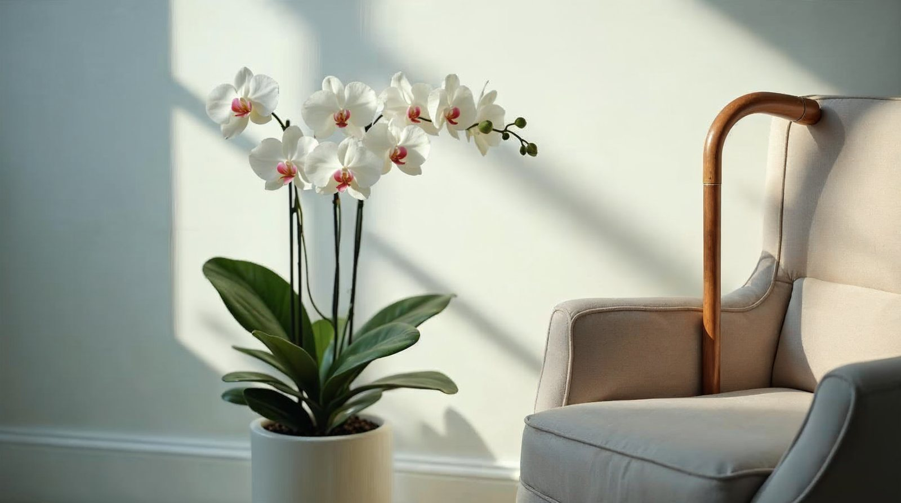
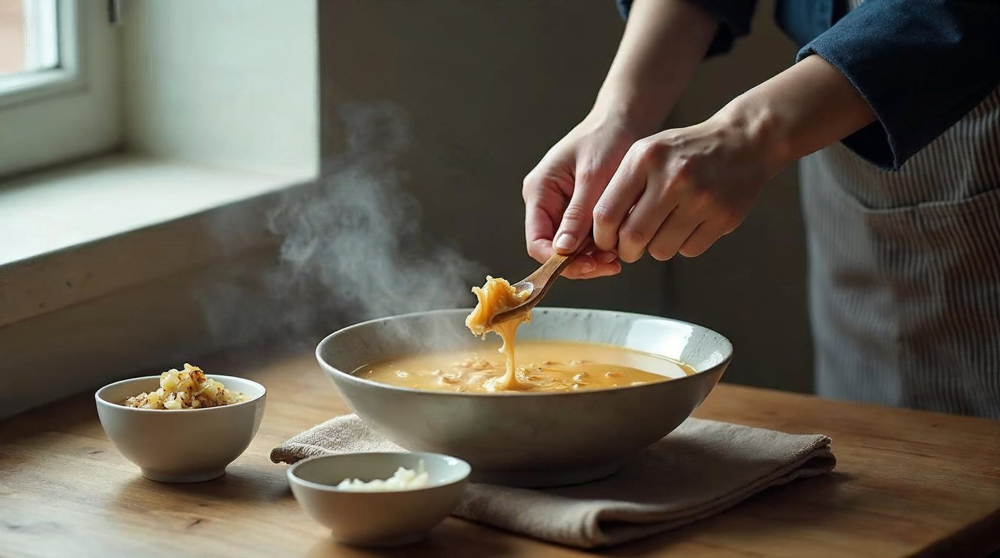
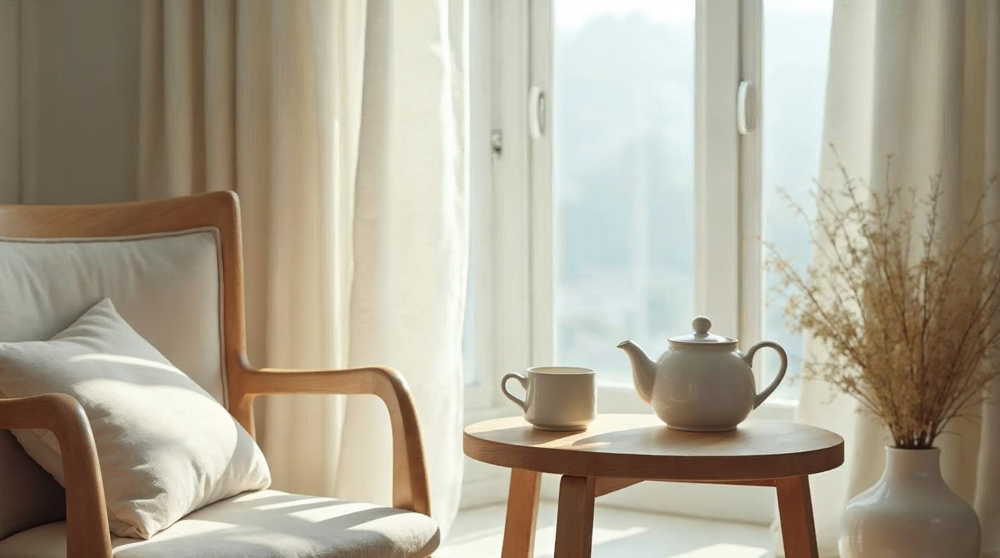
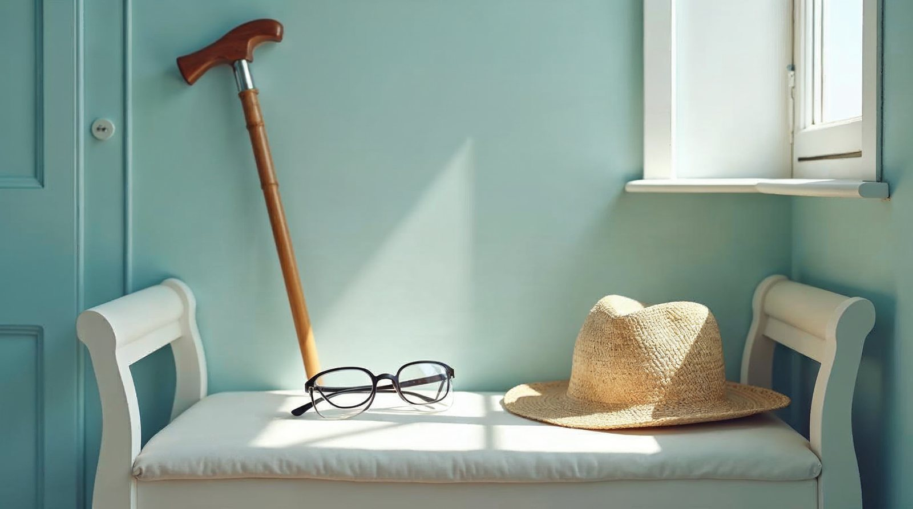
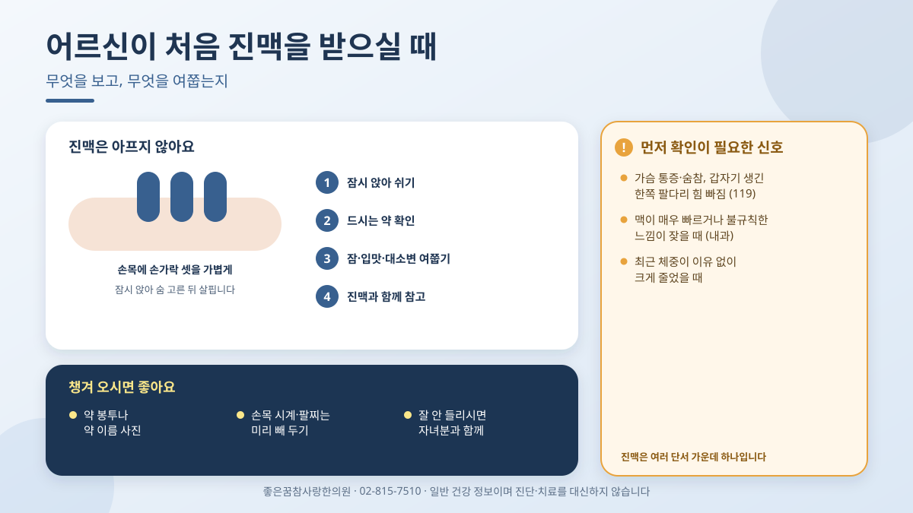

이종호 한의사 감수좋은꿈참사랑한의원 대표원장 (한의사 면허번호 19769)발행 2026-11-24 · 수정 2026-11-26
이 글의 차례
- 왜 진맥과 함께 여러 가지를 여쭐까요
- 진맥은 이렇게 진행돼요
- 맥에서는 무엇을 느끼나요?
- 맥으로 보는 것과 맥만으로 알 수 없는 것은 다른 얘기예요
- 먼저 이렇게 여쭙니다
- 맥이 잠깐 흔들리는 때가 있어요
- 맥을 짚는 동안 이런 이야기를 나눠요
- 집에서 재 둔 기록이 도움이 되는 이유
- 자녀분이 함께 오시면 좋은 점
- 일상에서 먼저 해 볼 수 있는 것
- 계절과 하루 시간에 따라서도 달라져요
- 혀와 배는 왜 보나요?
- 어르신들이 자주 걱정하시는 것
- 처음 오시는 날 이것만 챙겨 오세요
- 한의원에서 함께 살필 수 있는 경우
- 진맥 뒤에는 무엇을 정하나요?
- 다음에 다시 오시면
- 하나만 부탁드릴게요
- 이렇게 기록해 오시면 상담이 쉬워집니다
- 이런 증상은 먼저 확인이 필요합니다
진맥은 손목에 손가락을 가볍게 얹어 맥을 살피는 방법이라 아프지 않습니다. 좋은꿈참사랑한의원에서는 어르신을 포함해 오시는 모든 분의 양쪽 손목 맥부터 짚고, 짚는 동안에도 드시는 약과 생활 모습을 여쭙습니다.
처음 한의원에 오시는 어르신들은 맥만 짚으면 다 아는 것 아니냐고 물으시기도 하고, 반대로 무엇을 하는지 몰라 긴장하시기도 합니다.
진료실에서 어르신들이 손목을 내미시면서 "어디 한번 봐 봐요, 내 몸이 어떤가" 하실 때가 있어요. 맥 하나로 다 알아맞히길 기대하시는 거죠. 반대로 손을 꼭 쥐고 잔뜩 긴장하신 분도 계시고요.
그러니까 사실은 진맥은 시험이 아니에요. 몸 이야기를 시작하는 첫인사 같은 거예요. 맥을 짚으면서 말씀을 듣고, 말씀을 들으면서 다시 맥을 느끼는 거거든요. 오늘은 그 과정을 처음 오시는 어르신과 가족분들께 차근차근 풀어 드릴게요.
왜 진맥과 함께 여러 가지를 여쭐까요
- 진맥은 몸 상태를 이해하는 단서 가운데 하나라, 말씀하시는 증상과 생활 모습을 함께 들어야 전체 모습을 그릴 수 있습니다.
- 어르신은 드시는 약과 지병이 여러 가지인 경우가 많아 치료나 한약이 겹치지 않는지 먼저 확인해야 합니다.
- 잠, 입맛, 대소변의 변화는 몸 전체의 리듬을 보여 주는 중요한 정보입니다.
- 계단을 오르거나 급히 걸어오신 직후에는 맥이 빨라질 수 있어 잠시 쉬신 뒤 살핍니다.
진맥은 이렇게 진행돼요
먼저 편하게 앉으시고 팔을 책상 위에 툭 올려놓으시면 돼요. 손바닥이 위를 보게 하고, 손목에 힘을 빼 주세요. 팔을 공중에 들고 계시면 그 힘 때문에 맥이 달라질 수 있거든요. 소매가 손목을 꽉 조이는 옷이라면 살짝 걷어 올려 주시면 돼요.
어깨나 팔이 불편해서 팔을 쭉 펴기 어려우신 분은 편하신 자세로 두셔도 괜찮아요. 제가 손목 쪽으로 맞춰서 짚으면 되거든요.
저는 손목 안쪽, 엄지 쪽으로 손가락을 가볍게 얹어요. 누르는 것도 세게 꾹 누르는 게 아니라, 살짝 얹었다가 조금 눌렀다가 하면서 맥이 어떻게 느껴지는지 보는 거예요. 아프실 일은 없어요.
한쪽을 본 다음 반대쪽 손목도 짚어요. 양쪽이 조금씩 다르게 느껴지는 경우가 있어서 둘 다 보는 거예요. 짚는 동안 말씀하셔도 괜찮아요. 오히려 편하게 이야기 나누시는 게 긴장을 덜어 드리거든요.
손목에 파스를 붙이셨거나 상처가 있다면 미리 말씀해 주세요. 그쪽은 피해서 살피거나 다른 방법으로 볼 수 있어요. 손목이 아프신 분도 살짝 얹는 정도라 걱정하지 않으셔도 돼요.
맥에서는 무엇을 느끼나요?
맥이 얼마나 빠르고 느린지, 힘 있게 뛰는지 약하게 뛰는지를 먼저 봐요. 손가락을 살짝만 얹어도 느껴지는지, 조금 깊이 눌러야 느껴지는지도 보고요. 고르게 뛰는지, 가끔 건너뛰는 느낌이 있는지도 함께 살펴요.
한의학에서는 이런 맥의 모습을 몸의 기운과 열, 냉기, 피로를 가늠하는 단서로 써 왔어요. 예를 들어 손발이 차고 기운이 없다고 하시는 분은 맥도 가늘고 약하게 느껴지는 경우가 있거든요.
다만 이건 어디까지나 단서예요. 맥 하나만 보고 "이 병이에요" 하고 말하지 않아요. 말씀하시는 증상과 생활 모습, 혀와 배, 다른 병원 검사 결과까지 모아서 그림을 그리는 거예요.
맥으로 보는 것과 맥만으로 알 수 없는 것은 다른 얘기예요
두 개가 다른 얘기거든요. 맥으로는 지금 몸이 지쳐 있는지, 긴장해 있는지, 차가운 쪽인지 더운 쪽인지 같은 몸의 전체적인 흐름을 가늠해 볼 수 있어요.
반대로 혈당 수치나 뼈 사진처럼 숫자와 영상으로 확인해야 하는 것은 맥으로 대신할 수 없어요. 그런 건 검사로 보는 게 맞아요. 그래서 다니시는 병원 검사 결과가 있다면 꼭 같이 보여 주세요.
어르신들 가운데 "맥 짚어 보니 큰 병 없다고 하더라" 하시며 병원 검사를 미루시는 분이 계시는데, 그건 제가 바라는 게 아니에요. 필요한 검사는 받으시고, 한의원에서는 그 위에서 몸을 돌보는 쪽으로 생각해 주세요. 양방으로 잘 관리되는 건 그대로 이어 가시면 되는 거예요.

먼저 이렇게 여쭙니다
- 지금 드시는 약은 무엇이고, 다니시는 병원이 있나요?
- 요즘 잠, 입맛, 대소변은 어떠신가요?
- 가장 불편하신 곳은 어디이고 언제부터 그러셨나요?
- 최근에 넘어지신 적이나 어지러우신 적이 있나요?
맥이 잠깐 흔들리는 때가 있어요
맥은 생각보다 금방 달라져요. 계단을 올라오신 직후, 급하게 걸어오신 뒤, 진한 커피를 막 드신 뒤에는 평소보다 빨라지기 쉬워요. 그건 몸이 원래 그렇게 반응하는 거예요.
추운 날 밖에서 막 들어오셨을 때나, 식사를 배부르게 하신 직후에도 맥이 평소와 다르게 느껴질 수 있어요. 처음 오셔서 많이 긴장하셨을 때도 마찬가지고요.
그래서 저는 오시자마자 바로 짚기보다 잠깐 앉아 숨을 고르신 뒤에 봐요. 커피를 드시고 오셨거나 급히 오셨다면 편하게 말씀해 주세요. 그걸 알고 보면 맥을 읽기가 훨씬 수월하거든요.
전날 밤 잠을 거의 못 주무셨거나, 오시기 직전에 집안일로 무리하셨다면 그것도 알려 주세요. 그날 맥이 평소보다 지쳐 보이는 이유를 같이 이해할 수 있어요.
맥을 짚는 동안 이런 이야기를 나눠요
맥을 짚는 시간이 조용한 시간만은 아니에요. 그동안 저는 요즘 어떻게 지내시는지 편하게 여쭤봐요. 밤에 몇 번 깨시는지, 아침은 드시는지, 화장실은 편하신지 같은 것들이요.
이야기를 나누다 보면 맥이 조금씩 달라지는 게 느껴질 때가 있어요. 처음엔 긴장해서 빨랐던 맥이 말씀을 하시면서 차분해지는 거죠. 그래서 맥은 한 번 짚고 끝내기보다 이야기를 들으며 몇 번 다시 느껴 보는 게 좋아요.
손발이 찬지, 더위를 타시는지, 땀은 많으신지도 여쭤봐요. 맥에서 느낀 것과 말씀이 맞아떨어지는지 맞춰 보는 거예요. 그렇게 여러 조각을 모아야 몸 전체의 모습이 보이거든요.
집에서 재 둔 기록이 도움이 되는 이유
혈압약이나 당뇨약을 드시는 어르신이라면 집에서 재 두신 혈압이나 혈당 기록을 가져와 주세요. 하루 이틀 치보다는 일주일 정도 모인 기록이 흐름을 보기에 좋아요.
맥은 그날 그 순간의 모습이고, 집에서 재 둔 기록은 며칠 동안의 모습이에요. 둘을 같이 보면 진료실에서 잠깐 본 것만으로는 알기 어려운 흐름을 짐작하는 데 도움이 되거든요.
수첩에 적어 두신 것도 좋고, 기계 화면을 사진으로 찍어 오셔도 돼요. 언제 재셨는지, 아침인지 저녁인지만 같이 적혀 있으면 충분해요.
자녀분이 함께 오시면 좋은 점
어르신이 혼자 오셔도 진료는 충분히 가능해요. 그래도 처음 오시는 날은 자녀분이 함께 오시면 좋은 점이 있어요. 어르신이 긴장해서 미처 못 하신 말씀을 곁에서 보태 주실 수 있거든요.
예를 들어 어르신은 "잠은 잘 자" 하시는데, 자녀분이 "밤에 화장실 때문에 서너 번은 깨세요" 하고 보태 주시는 경우가 많아요. 그 한마디가 맥을 이해하는 데 큰 도움이 돼요.
진료가 끝나고 집에서 지켜보실 점을 말씀드릴 때도 자녀분이 같이 들으시면 놓치는 게 줄어요. 어르신 혼자 기억하시기엔 내용이 많을 수 있으니까요.

일상에서 먼저 해 볼 수 있는 것
- 진맥 전에는 숨이 가쁘지 않게 잠시 앉아 쉬기
- 드시는 약은 약 봉투나 약 이름 사진을 챙겨 오기
- 손목을 조이는 시계나 팔찌는 미리 빼 두기
- 잘 들리지 않으시면 자녀분이 함께 오셔서 설명을 같이 듣기
계절과 하루 시간에 따라서도 달라져요
맥은 계절에 따라서도 조금씩 달라요. 더운 여름에는 몸이 열을 내보내느라 맥이 겉으로 드러나기 쉽고, 추운 겨울에는 안으로 가라앉는 듯 느껴지는 경우가 많아요. 몸이 계절에 맞춰 옷을 갈아입는 거예요.
하루 중에도 아침에 막 일어나셨을 때와 오후에 한참 움직이신 뒤의 맥이 다를 수 있어요. 그래서 다시 오실 때 가능하면 비슷한 시간대에 오시면 지난번과 비교하기가 더 쉬워요. 물론 어려우시면 편한 시간에 오셔도 괜찮아요.
혀와 배는 왜 보나요?
맥 다음으로 필요하다고 판단되면 혀를 보여 달라고 부탁드려요. 혀의 색, 혀에 낀 것의 두께와 색, 혀 가장자리 모양을 보면 몸의 열과 냉기, 소화 상태를 가늠하는 데 도움이 되거든요.
배를 살필 때는 배를 가볍게 눌러 보면서 단단한 곳이 있는지, 누를 때 불편한 곳이 있는지, 차갑게 느껴지는 곳이 있는지를 봐요. 소화가 잘 안 되거나 변비가 있는 분들께 특히 도움이 돼요. 누를 때 불편하시면 바로 말씀해 주세요. 힘을 조절해 가며 볼게요.
혀를 보여 드리기 직전에 사탕이나 색이 진한 음료를 드셨다면 알려 주세요. 혀 색이 달라 보일 수 있어서요. 틀니를 하셨다면 편하신 대로 하셔도 괜찮아요.
어르신들이 자주 걱정하시는 것
"맥 짚고 나서 큰 병 있다고 하면 어떡하나" 하고 걱정하시는 어르신들이 많아요. 그런데 나이가 들면서 맥이 예전보다 약해지거나 잠이 얕아지는 건 원래 그래요. 때가 돼서 오는 자연스러운 변화인 경우가 많거든요.
"침을 맞아야 하느냐"도 많이 물어보세요. 진맥을 받으셨다고 바로 침을 놓는 건 아니에요. 진찰을 다 하고 나서 어떤 방법이 맞을지 같이 정하는 거고, 걱정되시는 건 그때 편하게 말씀하시면 돼요.
말씀을 잘 못 하셔도 괜찮아요. 생각나시는 대로, 아무거나 물어보세요. 제가 천천히 여쭤보면서 같이 정리해 드릴게요.
맥이 약하다는 말을 들으면 덜컥 겁이 나실 수 있어요. 그런데 맥이 약하다는 건 지금 몸이 조금 지쳐 있다는 뜻인 경우가 많아요. 그럴 땐 세게 몰아붙이기보다, 잠과 식사를 챙기면서 천천히 기운을 채워 가는 쪽으로 같이 방법을 찾아요.
처음 오시는 날 이것만 챙겨 오세요
- 드시는 약 전부(약 봉투, 처방전, 약 이름 사진)
- 집에서 재 두신 혈압이나 혈당 기록
- 최근 건강검진 결과지 요약 쪽
- 소매를 걷기 쉬운 옷
자녀분이 모시고 오신다면 연세 드신 부모님을 모시고 처음 한의원에 갈 때는 무엇을 챙기면 좋을까요?도 함께 봐 두시면 준비가 더 수월해요.

한의원에서 함께 살필 수 있는 경우
- 불편한 곳이 여러 군데인 경우 진맥과 함께 생활 모습을 넓게 여쭙고 먼저 살필 것을 정합니다.
- 잠과 입맛, 대소변이 함께 흔들리는 경우 몸 전체의 리듬을 함께 살핍니다.
- 복용 중인 약이 많은 경우 한약이나 치료가 겹치지 않는지 먼저 확인합니다.
진료실에서는 양쪽 손목을 차례로 짚으면서도 불편하신 점과 드시는 약을 여쭙고 말씀을 듣습니다. 필요하면 혀(설진)와 배(복진)도 살핀 뒤 상태에 맞는 방법을 정합니다. 귀가 전에는 집에서 지켜보실 점과 다음에 확인할 일을 알려 드리며, 자녀분이 함께 오시면 같이 설명을 들으셔도 됩니다.
한약은 드시는 약을 먼저 확인한 뒤에 정하고, 처방받은 약은 처방한 의사와 상의 없이 줄이거나 끊지 않습니다. 한약을 드시다가 속이 불편하거나 몸에 맞지 않는 느낌이 들면 복용을 멈추고 한의원으로 연락해 주세요.
진맥 뒤에는 무엇을 정하나요?
맥과 말씀, 혀와 배를 다 살피고 나면 무엇부터 도와드릴지 순서를 정해요. 불편한 곳이 여러 군데라면 가장 힘드신 것부터, 또는 다른 불편을 끌고 다니는 것부터 먼저 보는 거예요.
방법은 어르신마다 달라요. 침이 맞는 분도 있고, 한약 상담이 먼저인 분도 있어요. 무릎이나 허리처럼 아픈 곳이 뚜렷하면 그 자리를 살피는 치료를 같이 정하기도 하고요. 어느 쪽이든 어르신과 가족이 이해하시도록 설명드린 뒤에 정해요.
치료를 시작하면 보통 한 달 정도 지내 보면서 잠, 입맛, 기운이 어떻게 달라지는지 같이 보고 다음을 정해요. 처음부터 길게 정해 두지 않는 건, 어르신마다 몸이 받아들이는 속도가 다르기 때문이에요.
다음에 다시 오시면
다시 오시면 이번에도 맥부터 짚어요. 지난번과 비교해서 어떻게 달라졌는지 보는 거예요. 그사이 잠이나 입맛, 대소변이 어땠는지도 이어서 여쭤보고요.
그래서 집에서 지내시는 동안 달라진 점을 한 줄씩 적어 두시면 좋아요. 잠을 몇 번 깨셨는지, 밥을 얼마나 드셨는지 정도면 충분해요. 맥과 그 기록을 같이 보면 몸의 흐름이 더 잘 보이거든요.
새로 드시게 된 약이 있거나 다른 병원에서 검사를 받으셨다면 그것도 꼭 알려 주세요. 약이 바뀌면 맥이나 몸 상태도 같이 달라질 수 있어서, 그걸 알고 봐야 비교가 정확해져요.
증상이 줄었다고 바로 끝내기보다, 다시 흔들리지 않게 어떻게 지내실지도 같이 이야기 나눠요. 증상이 가라앉은 것과 몸이 회복된 것은 다른 얘기거든요.
하나만 부탁드릴게요
오시면 바로 진료실로 들어오시기보다 잠깐 앉아서 숨을 고르고 들어와 주세요. 딴 건 편하게 오셔도 괜찮아요. 맥을 읽고 몸을 살피는 건 제가 맡을게요.
진료실에서 궁금한 게 생기시면 그때그때 그냥 물어보세요. "지금 맥이 어떤가요?" 하고 물으셔도 돼요. 제가 느낀 걸 쉬운 말로 풀어서 말씀드릴게요.

이렇게 기록해 오시면 상담이 쉬워집니다
- 드시는 약 이름(약 봉투나 처방전 사진)과 다니시는 병원
- 가장 불편한 곳과 시작된 때
- 요즘 잠·입맛·대소변의 변화
- 최근 넘어지시거나 어지러우셨던 일
이런 증상은 먼저 확인이 필요합니다
- 가슴 통증이나 숨참이 있거나, 갑자기 한쪽 팔다리 힘이 빠지거나 말이 어눌해진 경우
- 맥이 매우 빠르거나 불규칙하게 뛰는 느낌이 자주 드는 경우
이런 신호가 있으면 한의원보다 가까운 병원이나 응급실을 먼저 찾으세요.

여쭙는 것
- 지금 드시는 약은 무엇이고, 다니시는 병원이 있나요?
- 요즘 잠, 입맛, 대소변은 어떠신가요?
- 가장 불편하신 곳은 어디이고 언제부터 그러셨나요?
생활에서 해 볼 것
- 진맥 전에는 숨이 가쁘지 않게 잠시 앉아 쉬기
- 드시는 약은 약 봉투나 약 이름 사진을 챙겨 오기
- 손목을 조이는 시계나 팔찌는 미리 빼 두기
한의원에서 함께 살필 것
- 불편한 곳이 여러 군데인 경우 진맥과 함께 생활 모습을 넓게 여쭙고 먼저 살필 것을…
- 잠과 입맛, 대소변이 함께 흔들리는 경우 몸 전체의 리듬을 함께 살핍니다.
- 복용 중인 약이 많은 경우 한약이나 치료가 겹치지 않는지 먼저 확인합니다.
먼저 확인이 필요한 신호
- 가슴 통증이나 숨참이 있거나, 갑자기 한쪽 팔다리 힘이 빠지거나 말이 어눌해진 경우
- 맥이 매우 빠르거나 불규칙하게 뛰는 느낌이 자주 드는 경우
한눈에 보는 표
| 구분 | 핵심 |
|---|---|
| 여쭙는 것 | 지금 드시는 약은 무엇이고, 다니시는 병원이 있나요? 요즘 잠, 입맛, 대소변은 어떠신가요? |
| 생활에서 해 볼 것 | 진맥 전에는 숨이 가쁘지 않게 잠시 앉아 쉬기 드시는 약은 약 봉투나 약 이름 사진을 챙겨 오기 |
| 한의원에서 함께 살필 것 | 불편한 곳이 여러 군데인 경우 진맥과 함께 생활 모습을 넓게 여쭙고 먼저 살필 것을 정합니다. 잠과 입맛, 대소변이 함께 흔들리는 경우 몸 전체의 리듬을 함께 살핍니다. |
| 먼저 확인이 필요한 신호 | 가슴 통증이나 숨참이 있거나, 갑자기 한쪽 팔다리 힘이 빠지거나 말이 어눌해진 경우 맥이 매우 빠르거나 불규칙하게 뛰는 느낌이 자주 드는 경우 |
자주 묻는 질문
진맥만으로 병을 알 수 있나요?
진맥은 몸 상태를 이해하는 단서 가운데 하나이며 그것만으로 결론을 내리지 않습니다. 말씀해 주신 증상과 다른 진찰, 필요하면 다른 의료기관 검사 결과를 함께 봅니다.
진맥은 아프거나 오래 걸리나요?
손목에 손가락을 가볍게 얹어 맥을 살피는 것이라 아프지 않으며, 양쪽 손목을 차례로 살핍니다. 짚는 동안에도 편하게 말씀하셔도 됩니다.
혀도 보여 드려야 하나요?
필요하다고 판단될 때 설진으로 혀의 색과 모양을 함께 살핍니다. 오시기 직전에 색이 진한 음식이나 사탕을 드셨다면 알려 주세요.
진료 시간은 어떻게 되나요?
좋은꿈참사랑한의원은 평일 09:30~20:00(점심 13:00~14:00), 토·일·공휴일 09:30~15:00에 진료합니다.
혈압약을 먹고 와도 맥을 볼 수 있나요?
네. 평소 드시는 약은 그대로 드시고 오세요. 어떤 약을 언제 드셨는지 알려 주시면 그 점을 생각하며 살핍니다.
좋은꿈참사랑한의원은 재진 때 지난번 이야기부터 이어서 여쭙니다. 진료시간과 예약은 오시는 길에서 확인하세요.
어디서 상담받을 수 있나요?
좋은꿈참사랑한의원은 서울 동작구 만양로2길 2 신성빌딩 3층·5층(서울 동작구 상도동, 7호선 상도역 3번 출구 근처)에 있습니다. 한의사 3명(이종호 대표원장, 조영기 수석진료원장, 정원영 진료원장)이 진료합니다. 진료시간은 평일 09:30~20:00(점심 13:00~14:00), 토·일·공휴일 09:30~15:00이며, 방문 전 전화로 확인을 권합니다. 예약은 네이버 예약, 카카오톡 상담, 전화 02-815-7510로 받습니다.
이 글은 일반적인 건강 정보이며 개인의 진단이나 치료를 대신하지 않습니다. 증상이 있거나 복용 중인 약이 있다면 진료를 통해 확인하세요. 치료 효과는 개인마다 다를 수 있습니다.
작성 기준: 일반적으로 알려져 있는 건강 정보를 참고해 정리했습니다(대표원장 감수). 증상 기록은 1~2주 동안 하루 1회, 비슷한 시간에 적어 오시면 지난 상태와 비교하기 쉽습니다.